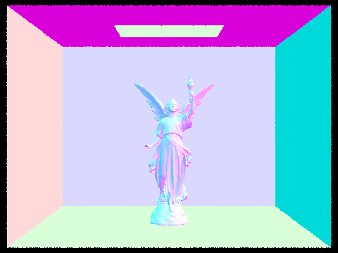
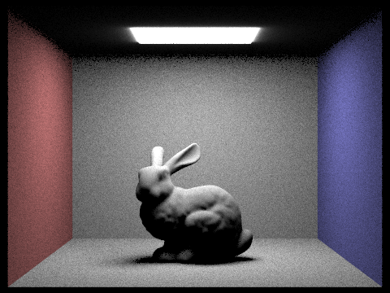

CS 184: Computer Graphics and Imaging, Spring 2023
Project 3-1: Path Tracer
Alex Jean, Kevyn Ramirez
Website URL: HERE
|
Result of indirect lighting on CBspheres.png
|
Overview
In this project we used pathtracing algorithms to simulate a light renderer. We used multiple concepts covered in
lecture, such as ray-scene intersections, structures to accelerate rendering times, and physically based lights and materials.
Our first objective was Ray Generation and Scene Intersection, where we cast rays from a virtual camera onto a 3-D world space to
sample light values on intersected primitives to produce a 2-D image. We used similar techniques from rasterization to test
intersections, such as point-in-triangle tests.
Because pathtracing requires casting many rays per pixel,
we could end up casting billions or even trillions of rays for larger or more complex scenes. In order to speed up computations, we
implemented an acceleration structure called a Bounding Volume Hierarchy (BVH), which is a tree data structure that speeds up
intersections computation from $O(n)$ to $O(\log{n})$.
After implementing some optimizations, we can now tackle lighting simulation. We do this by first implementing direct lighting,
which is the result of zero and one bounce of light. Zero bounce is the light coming directly from light sources, and one bounce is
the result of casting a ray from the light source onto the scene. This required using Monte Carlo Integration and sampling techniques
such as uniform hemisphere sampling or importance sampling to estimate emitted light from the rendering and reflection equations.
In order to simulate global illumination, we also need to implement indirect lighting, which is the result of tracing a
ray of light through multiple bounces and summing up the total contributed emitted light. We used recursion to trace multiple bounces from
an initial ray of light and Russian Roulette as a method of unbiased termination so we wouldn't recurse infinitely.
Finally, we can optimize our sampling even more by implementing adaptive sampling. Rather than sampling at the same rate
for every pixel, we choose which pixels need more sampling and which can terminate early based on a convergence heuristic.
Overall, this was a challenging but rewarding project that brought many ray tracing concepts to light!
Part 1: Ray Generation and Scene Intersection (20 Points)
Walk through the ray generation and primitive intersection parts of the rendering pipeline.
In our ray generation algorithm, we cast ns_aa rays per pixel. We take in normalized image coordinates, sample within a 2D grid
of the pixel, and generate a ray in camera space before transforming it to a ray in world space. Once the ray is cast into world space, we
check to see if it intersects any primitives. For triangles, we use the Moller-Trumbore algorithm to find the intersection time and
interpolate barycentric coordinates of the triangle. If the intersection time falls within the Ray's minimum and maximum time bounds and
the barycentric coordinates are valid, then we have intersected a triangle. We also update ray's intersection time and its isect object with data such as its bsdf if the intersection time is closer than any previous intersections. To perform intersection tests on a
sphere, we solved a quadratic formula to find up to 2 intersections with the sphere. We update the intersections the same way as the triangle.
Explain the triangle intersection algorithm you implemented in your own words.
We use a point-in-triangle test similar to the one we implemented in the rasterizer project. We use the direction and origin of the ray
and verticies of the triangle to calculate the intersection time and barycentric coordinates of the triangle via the Moller-Trumbore
algorithm. If the intersection time is within the bounds of the Ray's r.min_t and r.max_t, then we we intersected
the triangle and update r.max_t and the isect object.
Show images with normal shading for a few small .dae files.
|
CBSpheres_lambertian.dae
|
coil.dae
|
 dragon.dae
dragon.dae
|
teapot.dae
|
Part 2: Bounding Volume Hierarchy (20 Points)
Walk through your BVH construction algorithm. Explain the heuristic you chose for picking the splitting point.
Our BVH construction algorithm takes in a list of primitives and creates a bounding box containing the list of primitives.
If the number of primitives inside the box is greater than max_leaf_size, then we will rearrange the primitives in a way
such that it can be cleanly partitioned into two new child nodes, left and right. Otherwise, we create a new leaf node with the
bounding box, and set the leaf node's list of primitives to the start and end iterators of the primitives, which are reallocated on
the heap. We perform this tree division recursively until the original list of primitives has been subdivided into its own respective
leaf node, each containing max_leaf_size primitives.
For our splitting heuristic, we decided to split based on the centroid of the bbox's longest axis. To perform a clean split, we sorted
the primitives by centroid position relative to its longest axis. This way, when we split the list of primitives into two lists, we can
divide them into two halves. This allows us to optimize our ray intersect computations and reduces uneven distributions of primitives.
If a split point is chosen such that all the primitives lie on one side of the split point, we handle this by splitting the non empty list
into two lists and continue building the tree off those.
Show images with normal shading for a few large .dae files that you can only render with BVH acceleration.
|
beast.dae
|

CBlucy.dae
|
|
maxplanck.dae
|
wall-e.dae
|
Compare rendering times on a few scenes with moderately complex geometries with and without BVH acceleration. Present your results in a one-paragraph analysis.
We rendered the above scenes with and without BVH acceleration, with these times reported:
| Render |
# of Primitives |
Without BVH |
With BVH |
Speedup |
| wall-e.dae |
240,326 |
419.7776s |
0.0602s |
6973 |
| CBlucy.dae |
133,796 |
250.8886s |
0.0460s |
5454 |
| beast.dae |
64,618 |
112.0211s |
0.0279s |
4015 |
| maxplanck.dae |
50,801 |
84.2393s |
0.0447s |
1884 |
We can observe that as the number of primitives increases, the computation time required without BVH increases linearly, whereas
the time computation time for BVH acceleration generally grows logarithmically. This is expected as our BVH tree divides the primitives
into a tree, so rather than having to traverse all primitives linearly, we can traverse a tree in $O(\log{n})$ time. This speedup will be crucial when
tracing billions or even trillions of rays.
Part 3: Direct Illumination (20 Points)
Walk through both implementations of the direct lighting function.
There are two ways to implement direct lighting: sampling a hemisphere or sampling every light source.
When we sample a hemisphere, we cast new rays from the hit point of the ray generated from the camera. The directions of the new rays
are sampled from a unit hemisphere sampler. We use Monte Carlo integration to estimate the rendering equation by casting out N rays
and summing the incoming radiance from any ray that intersects an primitive. If the new ray intersects a primitive, we want to add the
incoming irradiance onto hit_p from that primitive.
Pseudocode:
for each sample:
generate a new direction vector wi, from hemisphere sampler
cast a new ray with origin hit_p and direction wi
if (the new ray intersects with a primitive):
Use the reflection equation to calculate outgoing light from the intersection of the new ray
compute cos_theta(wi), f(w_out, wi), L_i
add the calculated irradiance to L_out
normalize with num samples and pdf
return L_out
The drawback of hemisphere sampling is that we won't be able to sample any point light sources since the probability of a random ray hitting
a point light is near 0. So instead, we sample from every light source and cast a ray in the direction of hit_p. This time, we use importance
sampling, since each light will have a different pdf, so each sample should be weighted differently. The other difference with sampling
lights is that we want to check if a ray cast from the hit_p is able to intersect a light source, if it does, then we want to add the
irradiance from that ray to L_out, since we know that incoming light will contribute to the total irradiance.
Pseudocode:
for each light in scene->lights():
samples = 1 if it's a point light, ns_area_light otherwise
for i in range samples:
call sample_L to get a sampled direction vector wi, distance to light source distToLight, and pdf
generate a new ray with origin hit_p and direction wi
if there is no intersection between the ray and the light source:
calculate irradiance and add it to L_out
normalize L_out with num samples taken
return L_out
Show some images rendered with both implementations of the direct lighting function.
|
Uniform Hemisphere Sampling
|
Light Sampling
|
|
CBspheres.dae
|
 CBspheres.dae
CBspheres.dae
|
|

CBbunny.dae
|
CBbunny.dae
|
Focus on one particular scene with at least one area light and compare the noise levels in soft shadows when rendering with 1, 4, 16, and 64 light rays (the -l flag) and with 1 sample per pixel (the -s flag) using light sampling, not uniform hemisphere sampling.
|
1 Light Ray (CBbunny.dae)
|
4 Light Rays (CBbunny.dae)
|
|
16 Light Rays (CBbunny.dae)
|
64 Light Rays (CBbunny.dae)
|
We can see that as we increase the amount of light rays, we drastically reduce the amount of noise in the rendered
image. This is because there is more information per pixel generated for rendering.
Compare the results between uniform hemisphere sampling and lighting sampling in a one-paragraph analysis.
Uniform hemisphere sampling renders "fuzzier" images. Since we're casting rays out from different points in world space onto lights,
we can expect to see this kind of noise appear. It does do a good job of approximating bleeding light. For example, near the light
source in CBspheres with uniform hemisphere sampling, we can see light bleed from the edges. One downside of uniform hemipshere sampling
is that we aren't able to sample any point light sources. We can fix this by sampling from light sources, which seems to create softer
and more blended shadows. The results look a lot "smoother" than uniform hemisphere sampling. However, we don't get any bleeding
effects from light sources.
Part 4: Global Illumination (20 Points)
Walk through your implementation of the indirect lighting function.
The idea behind indirect lighting is to add additional bounces of light after the first initial bounce to accumulate radiance
contributed by surrounding objects or light sources. For a realistic simulation, we would want to bounce light an infinite amount of times,
but this is infeasible due to limited computational time and the fact that each successive bounce of light diminishes the
contributed radiance. Thus, we use Russian Roulette to limit the number of bounces. By combining direct lighting and indirect lighting, we can simulate global illumination.
In est_radiance_global_illumination() we determine how much light is returned
depending on the value of max_ray_depth.
If it equals 0, then we know to only return zero_bounce_radiance().
However, if it equals a number greater than or equal to 1, then we return the
sum of zero_bounce_radiance() + at_least_one_bounce_radiance().
at_least_one_bounce_radiance() handles returning the lighting of N
bounces.
at_least_one_bounce_radiance() recursively calls itself to bounce new rays of light from each
primitive that the previous ray of light intersected, summing up the given emissions along the ray's path. We treat every bounce
as one individual bounce, using one_bounce_radiance() to do the
computations and summing it to our output L_out. This could go on infinitely,
but we use Russian Roulette to randomly terminate the recursive algorithm without bias. We chose a termination probability of 1/3.
Show some images rendered with global (direct and indirect) illumination. Use 1024 samples per pixel.
Pick one scene and compare rendered views first with only direct illumination, then only indirect illumination. Use 1024 samples per pixel. (You will have to edit PathTracer::at_least_one_bounce_radiance(...) in your code to generate these views.)
|
Only direct illumination (CBspheres.dae)
|
Only indirect illumination (CBspheres.dae)
|
In the rendering with only direct illumination, we can see how light looks on all surfaces that have an immediate path
towards the light source. Shadows are very dark because there is no indirect light bleeding into them, but the spheres
and the walls are being hit directly by light, making them very bright.
In contrast, the rendering with only indirect illumination has quite the opposite effect. The space between the
two spheres is very bright because this is where light would bounce off of to then reflect and hit the spheres. The top
of the spheres are much dimmer because the direct light from the source is no longer being shown. The room is much
less bright because the walls are now being hit by light that's been reflected reflected, which has already lost some
potency compared to the light emitted immediately off of the source. We can also see indirect lighting creates a softer and more
even lighting effect, since there are more bounces of light between the objects, rather than a single bonuce off a light source in
direct lighting.
For CBbunny.dae, compare rendered views with max_ray_depth set to 0, 1, 2, 3, and 100 (the -m flag). Use 1024 samples per pixel.
|
max_ray_depth = 0 (CBbunny.dae)
|
max_ray_depth = 1 (CBbunny.dae)
|
|
max_ray_depth = 2 (CBbunny.dae)
|
max_ray_depth = 3 (CBbunny.dae)
|
|
max_ray_depth = 100 (CBbunny.dae)
|
It's clearly visible that the greater the max_ray_depth, the smoother and brighter the image is. This is because
the max_ray_depth is how many times light is allowed to bounce. The more bounces, the more light is allowed to
be emitted by our rendering program, making the image brighter--up to a certain limit. More bounces also allow for more surface area of the
scene to be hit, increasing the quality of shading on small divots in areas of the bunny. Furthermore, we can see more color
in the shadows since bouncing more rays means accumulating more contributions of light. The shadows also become softer with each successive
bounce, simulating the diminishing effects of multiple bouncing light rays.
Pick one scene and compare rendered views with various sample-per-pixel rates, including at least 1, 2, 4, 8, 16, 64, and 1024. Use 4 light rays.
|
1 sample per pixel (CBspheres.dae)
|
 2 samples per pixel (CBspheres.dae)
2 samples per pixel (CBspheres.dae)
|
|
4 samples per pixel (CBspheres.dae)
|
8 samples per pixel (CBspheres.dae)
|
|
16 samples per pixel (CBspheres.dae)
|
64 samples per pixel (CBspheres.dae)
|
|
1024 samples per pixel (CBspheres.dae)
|
Samples-per-pixel rates determine how much noise our image has after rendering. The more samples for a given pixel, the
more data our renderer has to calculate the color to return for the corresponding pixel in a scene.
Part 5: Adaptive Sampling (20 Points)
Explain adaptive sampling. Walk through your implementation of the adaptive sampling.
Adaptive sampling is an optimization that we can do to create "smarter" sampling: rather than sampling a fixed rate for every pixel,
we sample with different rates for each pixel depending on some heuristic. We sample more times for pixels that take longer to converge,
reducing the amount of noise in that pixel, and sample less times for pixels that converge quickly, to avoid wasting computation time.
We define a variable $I$ to measure the pixel's convergence, where $I = 1.95 \cdot \dfrac{\sigma}{\sqrt{n}}$. Where $\sigma$ is the standard
deviation of $n$ samples. We can conclude the pixel has converged when $I \le {maxTolerance} \cdot \mu$, where $\mu$ is the mean of
$n$ samples. If a pixel has converged, we stop sampling the pixel and return it's radiance.
Rather than computing these values at every sample, we compute it every samplesPerBatch and check if the pixel value
has converged.
Pick two scenes and render them with at least 2048 samples per pixel. Show a good sampling rate image with clearly visible differences in sampling rate over various regions and pixels. Include both your sample rate image, which shows your how your adaptive sampling changes depending on which part of the image you are rendering, and your noise-free rendered result. Use 1 sample per light and at least 5 for max ray depth.
|
Rendered image (CBbunny.dae)
|
 Sample rate image (CBbunny.dae)
Sample rate image (CBbunny.dae)
|
|
Rendered image (CBspheres.dae)
|
Sample rate image (CBspheres.dae)
|